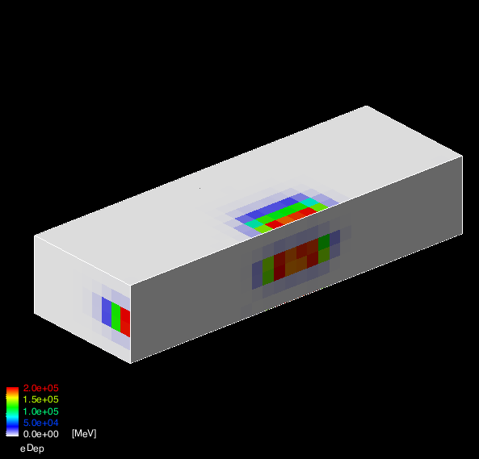

In this exercise we will collect simulation information using
command line scoring. A scoring mesh will be defined on top of the
volume created in Exercise 2.a, different quantities
will be recorded,
and we will show how to display and save in a text file.
Enable command line scoring.
Instantiate a scoring manager in the main() function.
Solution
| tutorial.cc File: |
// Activate UI-command base scorer
G4ScoringManager * scManager = G4ScoringManager::GetScoringManager();
scManager->SetVerboseLevel(1);
|
You might have a compilation error in tutorial.cc. Read the error message and identify what you need to add.
Score some quantities: energy deposit, number of steps.
Using only UI commands create a scoring box mesh that is placed on top of the
calorimeter box. The mesh should have the same dimension as the
calorimeter and have (X times Y times Z)
30x6x10 voxels. Score the following
quantities:
- Energy deposits
- Number of steps for gammas
- Number of steps for e-
- Number of steps for e+
Dump the scored quantities to files and verify the content.
Hint: use the help command to understand the
format of command line scoring UI commands.
Starting from the content of the file scoring.mac reproduce in an
interactive session the various steps used to score the quantities. Some of
the UI commands used here depends on the UI commands used before.
For example the commands used to define a particle filter are used in combination
with the preceding command defining the quantity to score. The command
/score/close signals that all scoring volumes and associated quantities
are now completed and configured.
There are two separate concepts to grasp when scoring: one is the scoring mesh (e.g.
the shape, dimension and number of bins of the used 3D grid), the other is the
list of quantities measured in each cell of the grid.
You can have multiple quantities associated to a given
mesh, but you can also have multiple meshes in the same application even with
different geometries and possibily overlapping.
Solution
The macro scoring.mac shows all the UI commands needed
in this exercise. It can be used directly to create
the output file:
Note:Reduce the number of simulated events (default
2000) if the simulation takes too long.
| scoring.mac File: |
/run/initialize
########################################
#
# define scoring mesh
#
/score/create/boxMesh boxMesh_1
#
#Create a mesh large as the box
/score/mesh/boxSize 150. 30. 50. cm
#Position it over the box
/score/mesh/translate/xyz 0 0 8 m
#mesh voxel size of 5cm
/score/mesh/nBin 30 6 10
# All these quantities are associated
# with the mesh with name "boxMesh_1"
/score/quantity/energyDeposit eDep
/score/quantity/nOfStep nOfStepGamma
/score/filter/particle gammaFilter gamma
/score/quantity/nOfStep nOfStepEMinus
/score/filter/particle eMinusFilter e-
/score/quantity/nOfStep nOfStepEPlus
/score/filter/particle ePlusFilter e+
#
/score/close
#
/run/verbose 1
/gun/particle e-
/run/beamOn 2000
########################################
#
# Dump scores to a file: tell G4 which
# mesh and which quantity should go in the output file
#
/score/dumpQuantityToFile boxMesh_1 nOfStepGamma nOfStepGamma.txt
|
Visualize scored quantities.
Using UI commands draw on the screen different scored
quantities. For example the energy deposit looks like:

Solution
The macro file draw.mac shows how to draw scored
quantities, in also shows how to draw slices using loops in UI
commands.
This macro should be executed after
scoring.mac:
$ ./G4tut
Idle> /control/execute scoring.mac
Idle> /control/execute draw.mac
|
| draw.mac File: |
########################################
#
# drawing projections
#
/score/drawProjection boxMesh_1 eDep
/score/drawProjection boxMesh_1 nOfStepGamma
/score/drawProjection boxMesh_1 nOfStepEMinus
/score/drawProjection boxMesh_1 nOfStepEPlus
#
########################################
#
# drawing slices
#
/vis/scene/create
/vis/sceneHandler/attach scene-1
/score/colorMap/setMinMax ! 0. 800.
/control/loop drawSlice.mac iColumn 0 10 3
|
The macro files perform several views at the same time
(/score/drawProjection commands), try out the
views one at the time in the command line.